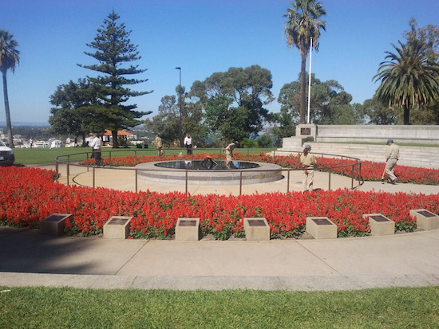

| Tuesday 14th April - Different time zone here so we woke early to see a spectacular sunrise over a 180 degrees flat horizon.
Not something you see every day! Drove the 146k straight stretch of the Nullarbor and got the paparazzi shot of the signpost.
Onto Norseman for lunch where we stopped in the deserted Main Street for a pie lunch. Dad rated this pie 2.5 out of 10. His lowest rating so far.
Norseman is so depressing you just want to get going as soon as possible. The local IGA has a sign that it won 't admit school kids during school hours.
This means if you wag school in Norseman, you can't buy a flagon of wine to enjoy the day off. Turned north and got to Kalgoorlie for the night.
Vincent displayed his talent for warming up steaks. I think he has been in the UK too long.
|
| Wednesday 15th April - Spent the day in Kalgoorlie seeing the sights. Went to an older days mine tour and got photo's of us climbing on the giant modern day trucks.
The highlight of the day was to watch a blast in the massive Superpit mine. The mine blast was finally scheduled for 5:15,
so we made our way to the viewing platform 15 minutes early. We elbowed small kids and old people out the way until we had a good view of
where the blast was supposed to take place. At 5:10 a puff of smoke signalled a blast to the side of where we expected it and a few seconds we heard the blast.
Much like a large fireworks noise. There were three such blasts then all net quiet. We thought there had to be more to it so waited around another 15 minutes.
About half the crowd had left by the time we decided to give up on any further blasts. As we were backing out, we heard a much bigger blast.
Steven went back to check and confirmed it had occurred where we had expected. We spent all day planning to see this and then missed it. Oh well maybe next time in Kalgoorlie!
The other main attraction we visited was the pub itch a glass floor over an old mine. We went in there and had lunch. We walked in and ordered a beer.
Vincent asked me where the glass floor was. I told him he had walked passed it when we entered and not noticed it. It was about 2 foot by 4 foot piece of dirty glass with some lights below showing a mineshaft. Very easy to miss walking past. The hamburgers we had for lunch were better than the main attraction. We were still full at dinner time and didn't need dinner. Except Dad who had a toasted sandwich, but he cheated as he did not finish his lunchtime burger. We have fallen in to the grey nomad time zone. We wake early around 6:30am and are tuckered out and ready for bed at 8:30pm - sad isn't it.
|
| Thursday 16th April - Drove to Perth after an early start from Kalgoorlie in a somewhat uneventful day. Lot's of roadwork on the last leg in to Perth. |
| Friday 17th April - City of Roadworks.Dropped Vincent off at the nearby railway station, although this took 45 minutes due to the roadworks on the highway and all the diversions. We then went to Kings park for a coffee and a great view of Perth and the Swan river. Unbeknown to us Vincent was also there having breakfast with his friends wife. Vince did not see us so we never met up, although I am not sure I can trust him. What would you do, have a quiet breakfast with a young lady or invite 3 old farts to join you.
We then went to Freemantle and Steven and Dad went into the maritime museum. Unfortunately yet tour of the submarine was fully booked so they missed out. On the way back we took a wrong turn due to roadworks and spent an hour seeing the sights of suburban Perth. Vince was dropped off later that night and thought he would visit the gents before coming into the caravan. However being a bit worse for wear, he tried to go to the ladies but it had a code to get in. He decided to wait for someone to come out. He was surprised to find it was an elderly woman with a towel around. Vince scampered back to the men's just as she was loosening her towel to encourage him.
|
|
|
 |
|
 |
| Saturday 18th April.
We left the city of roadworks after taking a detour to get on the Roe highway north. Halfway through the detour we used google maps to direct us and ended up back on the original road we started on. A lesson from this, Google maps is no substitute for detour signs.
On the way up we stopped at Badgingarra for a coffee break. On leaving the shop we noticed a car had stopped and a lady was walking a massive dog around. I commented "imagine travelling in a small car with that big brute". Vince agreed but he was referring to the lady, as she had many tatts, a broad back and a sleeveless dress.
Arrived at Sunset beech caravan park in Geraldton and it is fantastic. We have a campsite that is 50m from the beach facing due west so the sunsets are gorgeous. Sitting on a deck chair having a beer watching the sun go down into the sea. What better way to spend a Saturday evening? Fishing of course, Steve and I were out beach fishing, feeding the hungry blighters sardines until it was dark. Didn't catch anything but they sure did have a go at our sardines. We cooked a pasta up at the camp kitchen and met an interesting retired couple who were travelling around for 3 months. They had spent a lot of time in South Africa so we had a lot in common. We drank too much red wine chatting into the night, so I had a headache in the morning. A very pleasant evening in the camp kitchen with Mal and Edith, our new friends.
|
| Sunday 19th April.
Went for a walk on the beach early in the morning and then went into town. Lo and behold everything was closed. The 1990's have not caught up with Geraldton yet. Went to the memorial to the lost sailors of HMAS Sydney which sank in 1941 and all 635 lives were lost after a battle with the German ship the Kormoran. The ship was not found until 2008. It seems the Kormoran has still not been found. Vince reckons that is why there are so many German people in the campsite, they are still looking for it!.
Went fishing in the Marina with Steve and he caught a nice baby mullaway - 30 cm, we caught a few other fish but not enough for dinner, so we are going out for a curry. Vince got his long lost tripod out and spent 2 hours photographing the sunset and chatting to our new neighbours, a Swiss couple.
|
| Monday 20th April
Drove to Monkey Mia today with a stop off in Billabong for a coffee. Vine and Steve played the Billabong classic pool competition and Australia won. Stopped for the paparazzi just before Denham and discovered an invasion of flies. We had to buy fly nets in Denham and in Monkey Mia we have to walk around all day with flynets over our heads. It looked like a bee keepers convention around here. We are 20 metres from a tranquil bay and the sunsets are fantastic. Watched the fisherman clean their fish after a day out on their boats, sitting on our deck chairs with a beer in hand. It does not get more relaxing than this.
|
| Tuesday 21st April
Some of us (only me) got up to fish before sunrise. Had 2 rods in the water as I watched the sun come up over the water. Caught 2 whiting but gave them to the local pelican. The pelican spent the whole time keeping me company. It just sat there seemingly ignoring me until I caught a fish, then it jumped and came over to where the action was, hoping for a feed. When Vince came to see me fishing he almost walked into the pelican and got hissed at for invading its space. The others went to see the dolphins come in and be fed at 7:45am Vince got onto the pier to get a better photo and his hat blew off into the water. It had to be rescued by the dolphin lady (not to be confused with the lady dolphins). 7 female dolphins came in to the bay for he feeding and swam by 3 feet away from Dad and all of us standing in the water. The long term caravaners have been complaining about the flies and lack of fish. They blame the cyclone that came through here about 5 weeks ago for disturbing the sea and creating the flies. Our next door neighbour who was booked to stay until the end of April decided he had enough and left to return to flyless Geraldton. West australia green for this time of the year, not at all like the dry country I remember. This is all due to the cyclone dumping heaps of water a month ago.
Hired a 2 man kayak for the rest of the day. Took turns paddling around and also trolling a few lines out the back.
Steven hooked a large fish and wound it in until it was about a metre from the kayak before the line snapped. It was about 2 foot long and probably would have been our dinner.
The line on that rod was very light, so we will not use it again. Steven and I paddled during lunchtime and Vince proactively made lunch for everyone and dad had already eaten his when we returned.
Vince handed us our sandwiches and I noticed very thick ham hanging out the side. On closer inspection discovered Vince had used the bacon instead of the ham. We had to swop it over but dad had already eaten his raw bacon sandwich. It has had no I'll affect on him so far. Vince will now need constant supervision during meal preparation. I blame his mother for not training him well enough to distinguish a bacon burger from a ham sandwich - yes you Ethelwyn!
Our good luck with peaceful caravan parks came to an end when our other neighbour, let's call him the "Bogun king" decided to host all his fishing buddies next to our caravan. This went on till past 10pm with loud talkers within 2 metres from us all trying to sleep. We could here every word of their conversation like how long it takes to re-fill a jumbo jet, to what are the best boat propellers to buy, to a Bogun impersonation of Kylie Minogue. In the end Steven spat the dummy and yelled at them to finish up their drunken soirée. They did exactly that, sulking off to their caravans cursing under their breath. When we left early in the morning, I threw our leftover bait on their caravan roof - something to remember us by!
|
| Wednesday 22nd April
Left Monkey Mia, our northernmost point and headed south. Stopped again at Billabong for the return leg of the Billabong Classic ashes pool competition. England were cruising to victory with a decisive lead of five balls when they (Vince) choked at let the game go down to the black ball with Australia (Steve) retaining the ashes. Stopped for the night at Jurien Bay which was a great little town with a Caravan park right on the beachfront and a great jetty for fishing. They have also created a diving reef by sinking 80 concrete balls just off the beach. The caravan park had the best olive trees I have ever seen, they were so laden with olives, the branches were drooping under the weight. There was an old timer playing bush ballads to an appreciative "grey" audience in the camp kitchen. A lovely town worth a longer stay next time.
|